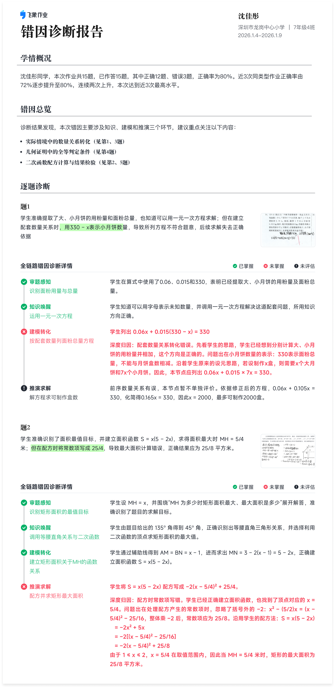

学情概览
沈佳彤同学，本次作业共15题，已作答15题，其中正确12题、错误3题，正确率为80%。近3次同类型作业正确率由72%逐步提升至80%，连续两次上升，本次达到近3次最高水平。结合逐题诊断，当前错因主要涉及知识唤醒、建模转化和推演求解，具体如下：
- 知识唤醒：几何证明中的全等判定条件（见第4题）
- 建模转化：实际情境中的数量关系转化（见第1、3题）
- 推演求解：二次函数配方计算与结果检验（见第2、5题）

沈佳彤同学，本次作业共15题，已作答15题，其中正确12题、错误3题，正确率为80%。近3次同类型作业正确率由72%逐步提升至80%，连续两次上升，本次达到近3次最高水平。结合逐题诊断，当前错因主要涉及知识唤醒、建模转化和推演求解，具体如下：